在Pega 7中使用自定义字体
Pega版本：Pega 7.1.8
前言
在 CSS3 之前，web 设计师必须使用已在用户计算机上安装好的字体。通过 CSS3，web 设计师可以使用他们喜欢的任意字体。当你找到或购买到希望使用的字体时，可将该字体文件存放到 web 服务器上，它会在需要时被自动下载到用户的计算机上。
更多关于WebFont的信息可以参考 W3C的资料
Pega 7正是利用这一点可以在页面上使用用户并没有安装的字体。
实现方法
获取WebFont字体
你可以从网上下载自己喜欢的字体，然后通过 Font Squirrel提供的在线工具 生成WebFont
当然，你也可以直接从网上下载WebFont，国内比较好的平台是阿里巴巴旗下的 阿里妈妈webfont平台
注意：Font Squirrel在线工具生成的CSS样式文件不能直接在Pega 7中使用，需要参照下面提供的例子做少许修改。
这里提供一个WebFont cinzelregular 作为例子
上传字体到Pega 7
通过Font Squirrel生成的WebFont共有5种格式以支持不同的浏览器（第一个是CSS样式文件）
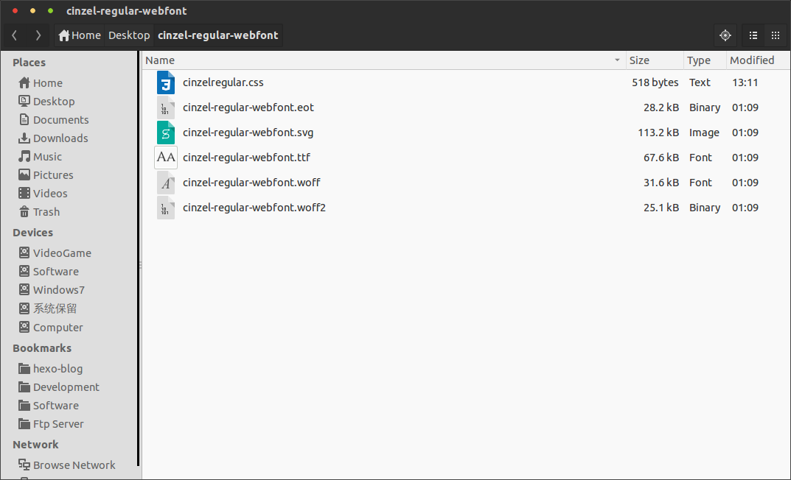
Pega 7中通过Binary File来存储字体文件
在Application Explorer中找到自己的Application，右键依次选择 +Create -> Technical -> Binary File 来创建一个Binary File
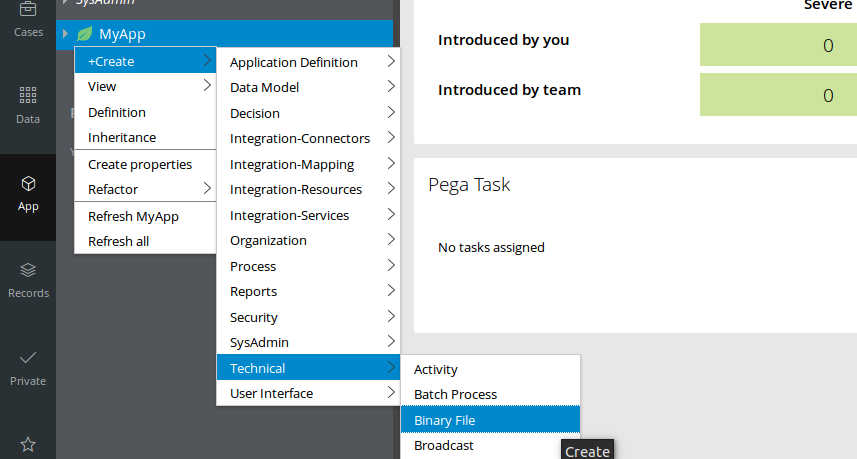
在Label中输入和字体文件一样的名字后，Identifier会自动生成，由于Pega 7默认会通过去掉Label中的特殊字符并大写首字母的方式来自动生成Identifier，所以要保证Identifier和字体文件的名字一样，就要按旁边的Edit链接来手动编辑Identifier。App Name (Directory)中一定要填写webwb，File Type (extension)中要分别填写5种字体的文件扩展名（eot，svg，ttf，woff和woff2）。所以我们要分别创建5个Binary File。
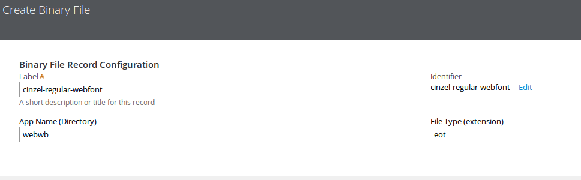
最后点击Upload File按钮并选择相应的字体文件上传后保存Rule即可。
App Name (Directory)中一定要填写webwb的原因是，webwb是默认的HTTP/HTTPS home directory，在Access Group的Advanced标签中可以找到
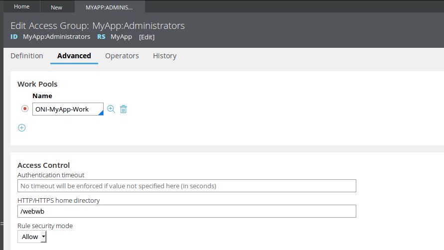
上传CSS样式文件
在创建好5个字体文件的Binary File后还要键一个Text File来存放调用字体文件的CSS样式文件
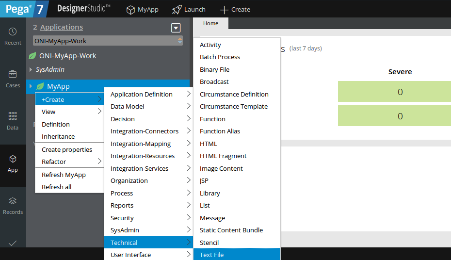
Label和Identifier填cinzelregular，App Name (Directory)填webwb，File Type (extension)填css
创建Text File后上传CSS样式文件到Text File中再保存即可
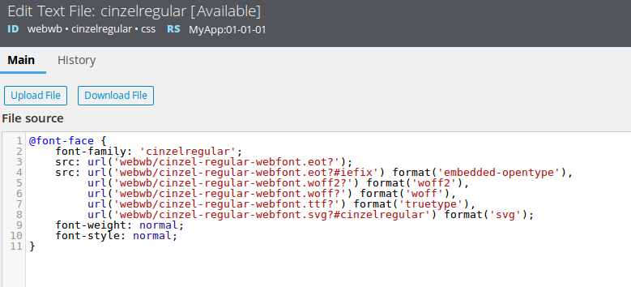
其中
1 | font-family: 'cinzelregular'; |
指明了该字体的名字是cinzelregular
配置Application Skin
打开Application Skin
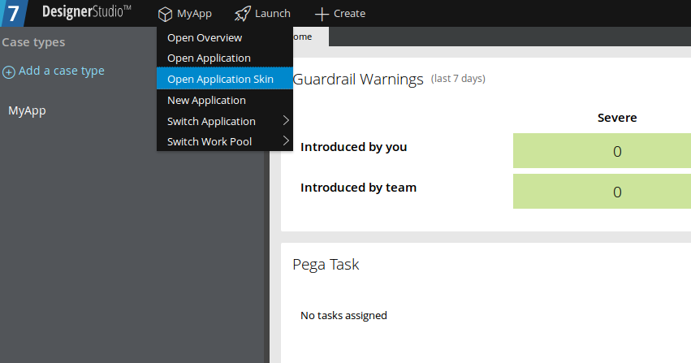
在Included styles标签的Additional style sheets域下点击Add style sheet链接，把我们刚刚创建的CSS样式文件添加进去
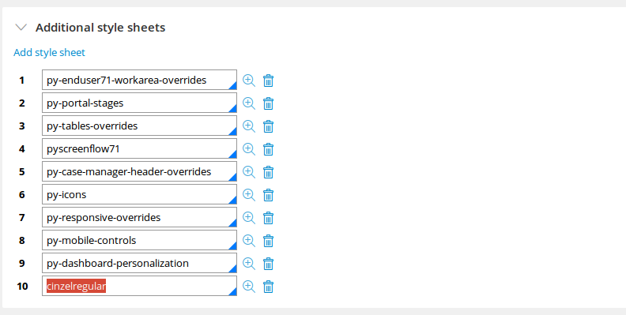
再切换到Mixins标签，在Overall font中选择Other，然后填写上我们上传的字体的名字（在CSS样式文件中指定的）
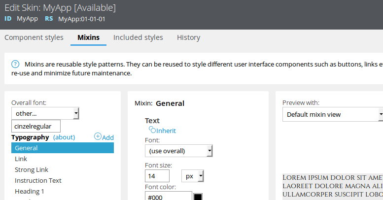
保存Skin Rule后新建一个Case就能看到效果了
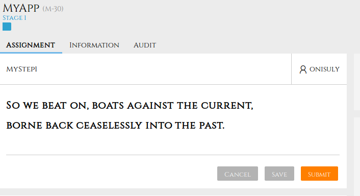
参考资料
附：字体图标
使用Webfont并不是仅仅能改变界面的字体这么简单，你还可以把WebFont当做图标来使用。
这里以 FontAwesome 为例
用法和更改字体时基本一致，只不过不需要在Application Skin的Mixins标签中设置Overall font了，毕竟我们不是要更改页面的字体。
在Section上拖拽一个Icon/Image Control，然后将Icon source设置为Icon Class，Class中填写相应的类即可，这里以fa fa-firefox fa-3x为例（具体用法可以参考 Font Awesome官网）
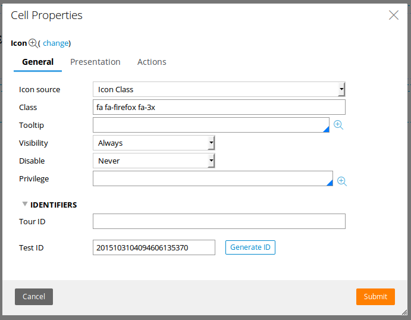
看下最后的效果吧
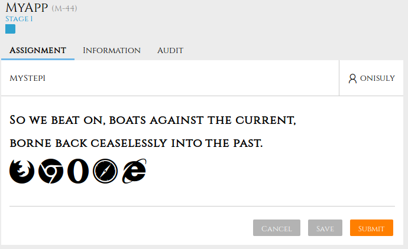